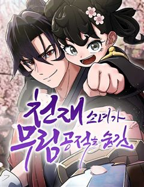
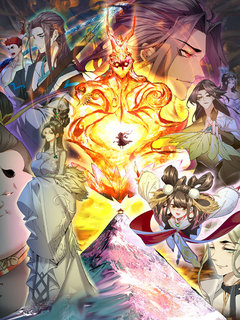
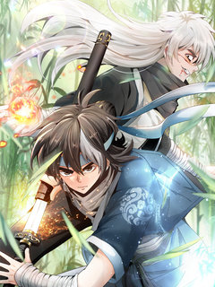
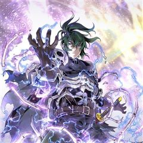
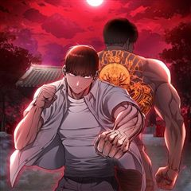
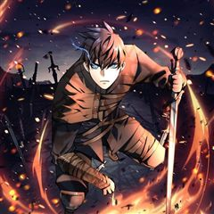

의원, 다시 살다 같은 웹툰 추천

의원, 다시 살다 · 도빈 / 태선
의원, 다시 살다 재밌게 봤다면 이 웹툰들도 좋아할 거예요. 같은 장르이면서 빙의, 힐링 같은 요소가 겹치는 작품을, 겹치는 요소가 많은 순서로 20개 골랐어요.
2026-10-07 기준 · 네이버웹툰·카카오웹툰·레진코믹스 · 성인 작품 제외
내 취향으로 직접 골라 추천받기 →-
1
 카카오웹툰
카카오웹툰무당기협
무림 사파의 수장인 혁련무강은 죽기 직전 불로초를 삼킨 후 눈을 떠보니 무당파 도동의 몸에 빙의되었다. 예전에 본인이 붕괴 직전까지 몰고 갔던 무당파에서 '진무'라는 이름의 도사로 다시 살게 된 그는 무당의 '양의신공'을 전수받기 위해 애쓰다 보니…
빙의액션무협카카오웹툰에서 보기 → · 무당기협 같은 웹툰 → -
2
 네이버웹툰
네이버웹툰파브르 in 사천당가
독물과 독충을 다루던 백만 스트리머 매운 파브르. 아프리카 현지촬영중 블랙맘바에 물려 무림에 전생하게 된다. 정글에서 자신이 좋아하는 독물들을 키우며 자연인 생활을 하던 주인공은 독공을 사용하는 사천당가의 눈에 띄게 된다. "자네. 우리 식구(食口)…
빙의액션무협네이버웹툰에서 보기 → -
3
 카카오웹툰
카카오웹툰천검기협
무림의 환란을 막기 위해 초절정고수에서 초고도비만으로 타임슬립+빙의한 개망나니 진위강, 아니 유현. 환란의 원흉인 '환란의 주구'를 찾아내 숨통을 끊어 놓아야 하거늘 사랑 듬뿍 받고 자라 걷지도 못할 만큼 육중해진 몸에 빙의한 덕에 제 숨통 유지가…
빙의액션무협카카오웹툰에서 보기 → -
4
 네이버웹툰
네이버웹툰천재 무림 트레이너
대 역병 시대, 운영하던 헬스장이 망했다. 어떻게든 먹고 살아보려던 찰나 읽고 있던 무협지에 빙의했다. 도착해보니 천년 소림이라 좋아했는데, 이건 뭐? 다들 잘못된 지식과 운동법으로 몸이 다 망가져 있잖아?! 헬스 트레이너였던 내가 이걸 어떻게 참아…
빙의액션무협네이버웹툰에서 보기 → -
5

네이버웹툰천재소녀가 무림공적을 숨김
무림공적을 숨긴 천재소녀의 귀염 뽀짝 무협 모험기! 내공을 잃고 세상과 단절한 채 살아가던 검귀 독고현 앞에, 천재소녀 왕소미가 느닷없이 찾아온다. 당돌하고 귀여운 그녀는 무림의 새로운 문제를 끌어들이며 독고현의 고요한 일상을 흔든다. 냉혈한으로 무…
힐링액션무협네이버웹툰에서 보기 → -
6
 카카오웹툰
카카오웹툰악인들의 대사형
무림제일 공포의 악당 네 명을 세인들은 '혈풍사자'라 불렀다. 그런데 갑자기 그들에게 사형(師兄)이 생겼다는데? 도저히 갱생하지 못할 악인들의 대사형은 8살 꼬마 검우빈! 반박불가 훈남 매력으로 무림을 평정하는 우빈 사형과 좌충우돌 사제들이 펼치는…
힐링액션무협카카오웹툰에서 보기 → -
7
 카카오웹툰
카카오웹툰적룡무제
압도적인 무력으로 천하무림을 일통한 무림의 절대지존 무제(武帝), 이환. 천수를 다하고 영면에 들었으나, 버림받은 황자의 몸으로 깨어나고 만다. 게다가 그의 모든 것이었던 대야성은 멸망하고 역사에서도 철저하게 지워진 뒤인데… “되돌려 놓으면 그뿐.”…
빙의액션무협카카오웹툰에서 보기 → -
8

레진코믹스빌런제자양성록 [연재]
현대 세계 속 지극히 평범한 회사원이었던 한무영. 어느 날 잠에서 깨어난 그는 자신이 무협 세계관 속 악명으로 둘째 가라면 서러울 인물, 풍월령의 몸으로 깨어났다는 사실을 깨닫는다. 그러나 풍월령은 악명과는 별개로 이미 노쇠하여 죽음을 앞둔 상태였고…
빙의액션무협레진코믹스에서 보기 → -
9

레진코믹스천존귀래 [연재]
백 년 전, 세상을 뒤흔든 성마대전 끝에 천존과 마존은 생을 마감한다. 그로부터 100년 뒤, 천존은 갓난아기의 몸으로 환생하지만 부모를 잡아먹었다는 소문 속에 ‘저주받은 아이’로 자란다. 천존은 자신이 속해 있던 천산파가 완전히 듣보잡 문파로 몰락…
빙의액션무협레진코믹스에서 보기 → -
10
 네이버웹툰
네이버웹툰왕따가 격투기를 너무 잘함
종합격투기 선수 차무결은 장회장의 꼬임에 넘어가 무체급 격투기를 하던중 식물인간이 된다. 이후 장회장의 이미지 쇄신용으로 이용당하는 차무결. 결국 죽게되는 그는 동명의 고등학생 차무결의 몸에 빙의된다. 내구도 s급의 단단한 몸. 격투기 능력을 업그레…
빙의액션네이버웹툰에서 보기 → -
11
 네이버웹툰
네이버웹툰천마는 조용히 살고싶다
'다음 생에는 반대로 살아보고 싶구나...' 오직 공포와 경외만이 전부였던 천마는 죽음의 순간 '증혼마공'을 제대로 익힐 수 있는 실마리를 얻는다. '증혼마공'은 타인의 혼백을 탐하기만 하는 게 아니었다. 그렇게 천마는 언제 죽을지 모르는 공자 벽태…
빙의무협네이버웹툰에서 보기 → -
12

카카오웹툰진화 특성으로 최강 네크로맨서
어느날 특수부대 출신인 김진환에게 걸려온 전화 한 통. 정체불명의 전화를 끊자 그는 자신이 즐기던 게임 '죄악'의 네크로맨서, 아드리아스 크롬웰이 되어 눈을 뜨게 된다. 하지만 아드리아스는 게임 클리어는 커녕, 당장의 생존 마저 확신할 수 없는 캐릭…
빙의액션카카오웹툰에서 보기 → -
13카카오웹툰
약먹는 천재마법사
마법재능을 한계까지 찍은 대가로 여러 페널티를 가지고 게임 세상에 빙의된 주인공이 거대도시 발칸에서 살아남기 위해, 여러 사람들과 얽히고 ‘닫힌 세계’의 비밀을 알아 나가며 바깥 세계에서 오는 종말을 막아내는 이야기.
빙의액션카카오웹툰에서 보기 → -
14

카카오웹툰환생보스
‘내 손으로 내 조직을 부순다.’ 암흑 세계의 마지막 실력파 건달, 강진파 보스 이강진. 주먹으로 전국을 통일하고 최고의 자리에 오르지만 가장 아끼던 동생인 조두영에게 배신 당해 죽는다. 그렇게 죽던 순간, 학교 폭력에 못이겨 스스로 생을 마감한 고…
빙의액션카카오웹툰에서 보기 → -
15
 카카오웹툰
카카오웹툰몰락 세가의 시한부 영약
7년 만에 깨어난 단목세가의 장손 단목련. 자신의 죽음 이후까지 보고 돌아온 그녀 앞에 갑자기 이상한 문구가 보이기 시작한다. [영기를 50 이하로 유지하세요. 이 상태로 두 달 이상 지속될 시 사망에 이르게 됩니다.] 내공을 쌓을 수 없는 그녀는…
힐링무협카카오웹툰에서 보기 → -
16
 네이버웹툰
네이버웹툰짜장 한 그릇에 제갈세가 데릴사위
짜장면 한 그릇으로 전 무림을 평정할 수 있을 것 같다? 최고의 중식 요리사를 꿈꿨지만 중국 송나라 시대로 보내져버린 주인공! 하지만 깨어난 몸에 무공은 전혀 없고, 남은 거라곤 전생에서 익힌 요리 기술들뿐. 그런데 이 요리들... 반응이 매우 좋다…
힐링무협네이버웹툰에서 보기 → -
17
 네이버웹툰
네이버웹툰나만 최강 초월자
뛰어난 신체 능력과 특수한 능력을 겸비한 "초월자"가 존재하는 세계. 따돌림 속에서 하루하루를 보내던 퇴물 초월자, 카미나기 미나토는 어떤 사건으로 인해 곤란에 처하지만, 죽음의 문턱에서 각성한다. 몸 안에 한때 종말의 위기를 막았던 전설의 초월자,…
빙의액션네이버웹툰에서 보기 → -
18

카카오웹툰다크 판타지의 망캐가 되었다
<캐릭터 삭제가 거부되었습니다> 불가능도 아니고, 거부라고…? 황당해 한 것도 잠시, 눈을 뜬 곳은 낯선 늪지대 한복판이었다. 내가 키우던 망캐가 된 채로 말이다. 처절하고 음습한 세계. 혼돈과 심연을 숭배하는 이가 가득하고 멸망을 향해 달려가는 암…
빙의액션카카오웹툰에서 보기 → -
19
 카카오웹툰
카카오웹툰천마님의 베이커리
중원을 제패하고 천마로 군림한지 수십년, 마침내 현대로 돌아왔다! 아버지를 도와 베이커리에서 일을 시작했다. 심안을 개방해 레시피를 파악하고, 화골탈퇴를 통해 반죽에 최적화된 골격을 만든다. 중원 최강의 천마, 무공으로 최강의 제빵사가 된다!
힐링무협카카오웹툰에서 보기 → -
20
 카카오웹툰
카카오웹툰무협지 남주의 어린 아내가 되어 버렸다
남주가 다 해먹는 무협지 속, 남주의 먼 조상님으로 빙의했다. 남주를 든든히 뒷받침해 주는 역할에 충실하기 위해 뼈가 으스러져라 일해서 최고의 가문을 세웠다. 그 후, 마음 편히 눈을 감았었는데. “뭐? 내 가문이 망했다고?!” 다시 눈을 떠 보니…
빙의무협카카오웹툰에서 보기 →